3 复制集机制及原理 & 实现
1 复制集的作用
- MongoDB 复制集的主要意义在于实现服务高可用
- 它的现实依赖于两个方面的功能:
- 数据写入时将数据迅速复制到另一个独立节点上
- 在接受写入的节点发生故障时自动选举出一个新的替代节点
复制集的作用
在实现高可用的同时，复制集实现了其他几个附加作用:
- 数据分发: 将数据从一个区域复制到另一个区域，减少另一个区域的读延迟
- 读写分离:不同类型的压力分别在不同的节点上执行
- 异地容灾:在数据中心故障时候快速切换到异地
典型复制集结构
一个典型的复制集由3个以上具有投票权的节点组成，包括:
- 一个主节点(PRIMARY): 接受写入操作和选举时投票
- 两个(或多个)从节点(SECONDARY): 复制主节点上的新数据和选举时投票
- 不推荐使用 Arbiter(投票节点)
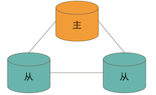
数据是如何复制的?
- 当一个修改操作，无论是插入、更新或删除，到达主节点时，它对数据的操作将被记录下来(经过一些必要的转换)，这些记录称为 oplog。
- 从节点通过在主节点上打开一个 tailable 游标不断获取新进入主节点的 oplog，并在自己的数据上回放，以此保持跟主节点的数据一致。
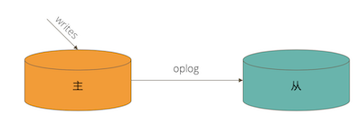
通过选举完成故障恢复
- 具有投票权的节点之间两两互相发送心跳;
- 当5次心跳未收到时判断为节点失联;
- 如果失联的是主节点，从节点会发起选举，选出新的主节点;
- 如果失联的是从节点则不会产生新的选举;
- 选举基于 RAFT一致性算法 实现，选举成功的必要条件是大多数投票节点存活;
- 复制集中最多可以有50个节点，但具有投票权的节点最多7个。
影响选举的因素
- 整个集群必须有大多数节点存活;
- 被选举为主节点的节点必须
- 能够与多数节点建立连接
- 具有较新的 oplog
- 具有较高的优先级(如果有配置)
常见选项
复制集节点有以下常见的选配项:
- 是否具有投票权(v 参数):有则参与投票;
- 优先级(priority 参数):优先级越高的节点越优先成为主节点。优先级为0的节点无法成 为主节点;
- 隐藏(hidden 参数):复制数据，但对应用不可见。隐藏节点可以具有投票仅，但优先级必须为0;
- 延迟(slaveDelay 参数):复制 n 秒之前的数据，保持与主节点的时间差。
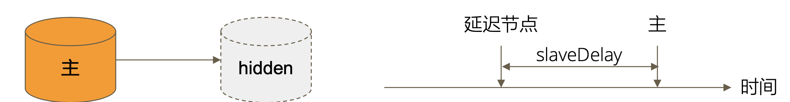
复制集注意事项
关于硬件:
- 因为正常的复制集节点都有可能成为主节点，它们的地位是一样的，因此硬件配置上必须一致;
- 为了保证节点不会同时宕机，各节点使用的硬件必须具有独立
关于软件:
复制集各节点软件版本必须一致，以避免出现不可预知的问题。
增加节点不会增加系统写性能!
2 实验:搭建 MongoDB 复制集
1. 准备
- 安装最新的 MongoDB 版本
- Windows 系统请事先配置好 MongoDB 可执行文件的环境变量
- Linux 和 Mac 系统请配置 PATH 变量
- 确保有 10GB 以上的硬盘空间
2.创建数据目录
MongoDB 启动时将使用一个数据目录存放所有数据文件。我们将为3个复制集节 点创建各自的数据目录。
- Linux/MacOS:
mkdir -p /data/db{1,2,3}
- Windows:
md c:\data\db1
md c:\data\db2
md c:\data\db3
3. 准备配置文件
复制集的每个mongod进程应该位于不同的服务器。我们现在在一台机器上运行3个进程，因此要 为它们各自配置
不同的端口。示例中将使用28017/28018/28019
不同的数据目录。示例中将使用
/data/db1或c:\data\db1
/data/db2或c:\data\db2
/data/db3或c:\data\db3
不同日志文件路径。示例中将使用:
/data/db1/mongod.log或c:\data\db1\mongod.log
/data/db2/mongod.log或c:\data\db2\mongod.log
/data/db3/mongod.log或c:\data\db3\mongod.log
4 准备配置文件(续)
Linux/MacOS
# /data/db1/mongod.conf
systemLog:
destination: file
path: /data/db1/mongod.log # log path
logAppend: true
storage:
dbPath: /data/db1 # data directory
net:
bindIp: 0.0.0.0
port: 28017 # port
replication:
replSetName: rs0
processManagement:
fork: true
Windows
# c:\data\db1\mongod.conf
systemLog:
destination: file
path: c:\data1\mongod.log # 日志文件路径
logAppend: true
storage:
dbPath: c:\data1 # 数据目录
net:
bindIp: 0.0.0.0
port: 28017 # 端口
replication:
replSetName: rs0
启动 MongoDB 进程
Linux/Mac:
mongod -f /data/db1/mongod.conf
mongod -f /data/db2/mongod.conf
mongod -f /data/db3/mongod.conf
注意:如果启用了 SELinux，可能阻止上述进程启动。简单起见请关闭 SELinux。
Windows:
mongod -f c:\data1\mongod.conf
mongod -f c:\data2\mongod.conf
mongod -f c:\data3\mongod.conf
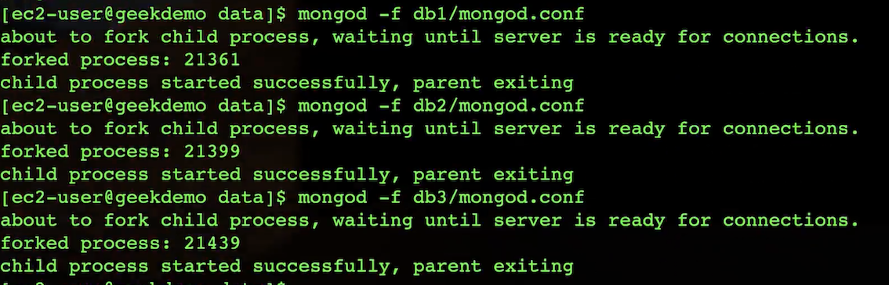
因为 Windows 不支持 fork，以上命令需要在3个不同的窗口执行，执行后不可关闭窗口否则 进程将直接结束。
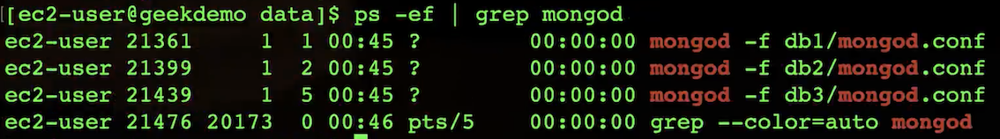
配置复制集
方法1
# mongo --port 28017
> rs.initiate()
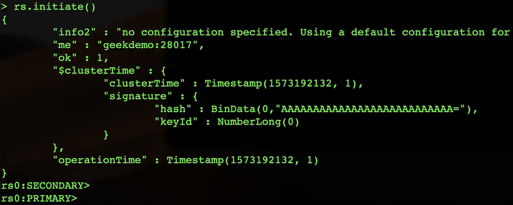
SECONDARY -> PRIMARY: in 1S
查看rs state
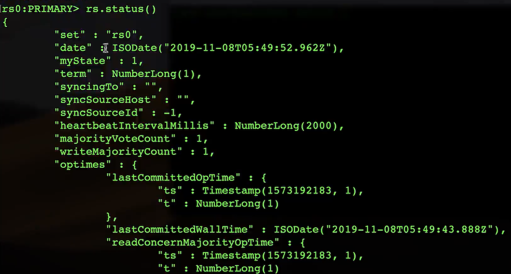
> rs.add("HOSTNAME:28018")
> rs.add("HOSTNAME:28019")
注意:此方式hostname需要能被解析

方法2
# mongo --port 28017
> rs.initiate({
_id: "rs0",
members: [{
_id: 0,
host: "localhost:28017"
},{
_id: 1,
host: "localhost:28018"
},{
_id: 2,
host: "localhost:28019"
}]
})
验证
MongoDB 主节点进行写入 & MongoDB 从节点进行读
主节点
# mongo localhost:28017
> db.test.insert({ a:1 })
> db.test.insert({ a:2 });
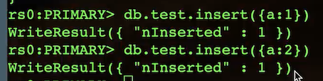
从节点
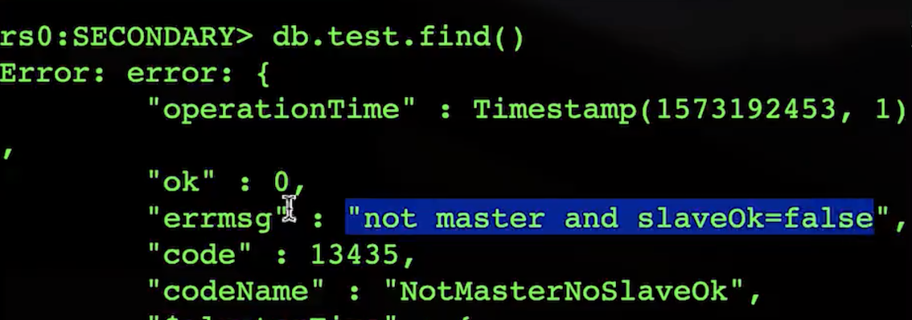
# mongo localhost:28018
> rs.slaveOk()
> db.test.find()
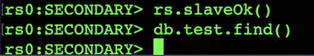
> db.test.find()
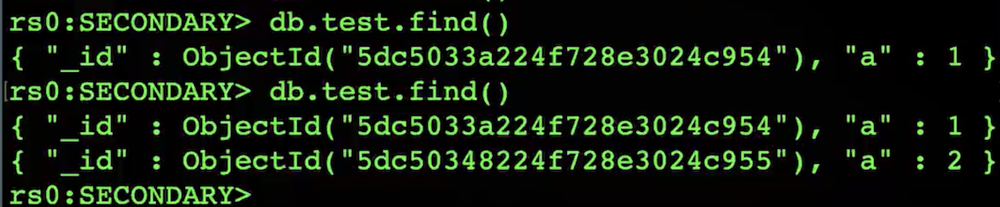